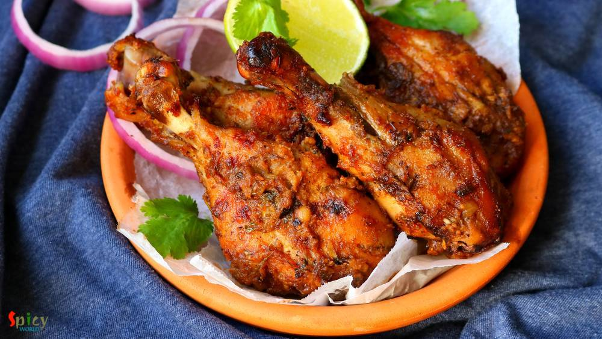

Simple and Easy Recipes
Posts on 'starter'

Nonveg Recipe
Mar 30, 2020
Basically Chicken Satay is a dish from Thai cuisine, where small pieces of meat or fish cooked on a stick, and served with a spicy peanut sauce. But what today I am sharing is different than this one. Nowadays, if you see menu cards of Bengali weddings, Chicken Sathe will be the most common item. They serve Chicken Sathe as starter. First time I had it in a wedding and I was like wo! what a flavor ...


Nonveg Recipe
Nov 13, 2019
Whenever I find a new recipe of Kabab, husband says - you should give it a try. As we both are crazy fan of various types of kabab. Attraction of this Banjara kabab is the stuffing. You can call them stuffed kabab also. The recipe is very simple and easy. You should give it a try.

Nonveg Recipe
Sep 19, 2019
Cheese stuffed Chicken balls are very delicious starter item. From younger to elder everybody love these balls. They have crispy coating outside and gooey cheese inside .. treat to your mouth! You can use any cheese of you choice. For this recipe I used ground cornflakes instead of breadcrumbs to coat the balls. You can definitely use breadcrumbs. Recipe of chicken cheese balls is very easy. If yo ...

Nonveg Recipe
May 17, 2019
Bhatti means oven made with clay and Murgh means chicken. Bhatti ka Murgh is an irresistible, spicy grilled chicken recipe from North Indian cuisine in which chicken will be marinated in roasted onion and cashew paste with yogurt and other flavorful spices. The taste is very close to Tandoori Chicken but slightly different because of the roasted onion flavor. Do try this recipe and let me know how ...

Nonveg Recipe
Jan 18, 2020
Tandoori chicken doesn't need any explanation. Its very popular in India and nowadays all over the world. There was a rumor that without "tandoor/oven" you cannot make tandoori. But believe me today I am sharing "oven method and stove top method" of making tandoori chicken. 'Tandoor' means oven made with clay and the heat comes from charcoal. In restaurants the actual tandoor flavour comes when ju ...

Nonveg Recipe
Apr 5, 2019
Who doesn't give order Chicken wings from starter menu in restaurants?? I am one crazy wings lover. There are so many yummy recipes of Chicken wings in the internet. They all look really good. Here is my take on Bhuna (slow cooked, using water as less as possible) Chicken wings which is basically Indian style spicy wings. You can make this recipe with drumsticks also. With some green chutney and o ...
")
Nonveg Recipe
Feb 27, 2019
If you are a fish lover, then 'fish fingers' should be on the top of your list. These crispy, spicy fingers can steal your heart in one bite. In Kolkata, every street food center, college canteens, restaurants sell these lip smacking Fish Fingers with chili sauce or Kasundi. You can use any kind of white fish fillet in this recipe. Oh boy, the taste is unbeatable and unforgettable !! There are no ...
")
Nonveg Recipe
Aug 21, 2019
If you have any Bengali friend in your gang then I guess you already know that he / she has a thing for fish, football and rabindra sangeet. We eat fish in many forms like thick curry (kaliya), thin curry (jhol), batter fried, shallow fried (mach vaja), steamed version (vapa) and so on. One of the popular among them is 'fried fish'. Now in this category also we have so many variations. The most si ...

Nonveg Recipe
Jan 31, 2019
Mughlai Keema Paratha is a very famous street food which has another name Keema Baida Roti. In Kolkata we call them 'moglai porota'. I made these parathas exactly like street style with minced meat, but you can skip that Keema part and keep the rest of the recipe same. The process is a bit lengthy but it is worth trying. I made dry potato curry along with mughlai paratha because these two goes ver ...

Nonveg Recipe
Jan 11, 2019
Chicken Lollipop is one of the most frequently ordered starter item in Indian restaurants. Main trick here is to give chicken wings, lollipop shape. You can serve them after deep frying but trust me tossing the fried Chicken lollipops in spicy brown sauce will enhance the taste to another level. Do give this recipe a try and let me know how it turned out for you.

Nonveg Recipe
Jan 1, 2019
In Bengal, one of the famous street food is 'dimer devil'. Dim means Egg in Bengal. Nowadays, 'egg chop' is also served in many party, get to gather and occasions. To make this you have to wrap a boiled egg with spicy potato filling, roll them in bread crumbs and then deep fry them. In college canteen or any ceremony, sometimes the cook mix some minced mutton (keema) with the spicy potato, the tas ...

Nonveg Recipe
Mar 7, 2019
A super spicy and fiery indo-chinese starter is 'Chicken 65'. In southern part of India, few restaurants first started selling this Chicken 65 as a quick snack and now, people from all around the world knows about Chicken 65. In USA, we get delicious Chicken 65 from Indian restaurants, it is one of our favorite appetizer and that is why I made my mind to make this dish in my kitchen. You can make ...

Nonveg Recipe
Nov 22, 2018
Hariyali Chicken Kabab is a very delicious variety of kabab in which boneless chicken will be marinated in yogurt, ginger, garlic, mint-coriander paste and lot of fresh spices along with few other ingredients. You can definitely use chicken legs instead of boneless. I will recommend you to use chicken thighs instead of breast pieces, as thighs will come out much more juicy. Hariyali means green co ...

Veg Recipe
Nov 12, 2018
Doi Fuchka or Dahi Puri Chaat is one delicious and popular variety from Chaat Gharana. You can get several types of chaat in India from street vendors. They all are very very tasty. In Kolkata, one of the famous chaat is 'doi fuchka'. The hollow chips are filled with spicy potato filling, thick sweet and sour yogurt mixture, sweet tamarind chutney along with lots of fresh coriander leaves and few ...
")
Nonveg Recipe
Aug 23, 2018
I am a really big fan of indo-chinese food, whereas 'he' prefers mughlai or authentic bengali food more. Before marriage, I used to find excuses to go to any restaurant and eat 'chilli chicken' with rumali roti. I know what are you guys thinking. But don't know why I love this combo so much. In every street of Kolkata you can find various indo-chinese restaurants. I mentioned Kolkata style because ...

Veg Recipe
Oct 24, 2018
Hara Bhara Kabab is a delicious snack item for all the veggie lovers. Hara means green color. The kabab contains potato, spinach and any type of green colored vegetables like capsicums, beans and peas. Though I have only used spinach today but feel free to add other vegetables also. Like usual Kabab, it is not grilled but fried version. I kept the recipe as simple as possible. Just give it a try a ...

Veg Recipe
Sep 25, 2018
Paneer Kathi Roll is loved by both vegetarian and non vegetarian people all across India. Paneer Frankie or roll is nothing but stuffed wrap, cooked paneer cubes with some onion slices and green chutney will be stuffed inside a cooked flour paratha. It will be easy for you if you divide the recipe in 3 parts - making stuffing, making paratha, assembling the rolls. You can serve this as evening sna ...

Veg Recipe
Aug 27, 2018
A cup of tea and some vegetable cutlets .... do you need anything more to spend a winter or rainy evening ?? I am always up for this kind of evenings. These cutlets are very much available in Kolkata. I guess, almost nobody makes vegetable cutlets at home in Bengal. On any occasion or just to enjoy some snacks, these chops were always bought from 'telebhajar dokan' / fast food center in my home. B ...

Nonveg Recipe
Jun 13, 2016
We, Bengalis, love to eat fish in many forms. One of the popular snack of West Bengal is 'macher chop'. Spicy crumbled fish inside and crispy coating outside - scrumptious !! We both usually enjoy this snack in the evening along with a cup of tea or with a can of beer. Both combos are unbeatable. If you have to impress any Bengali ever in your life, just indulge him/her in 'Bikeler adda' (evening ...
")
Nonveg Recipe
Jul 12, 2018
One of the famous street food from Kolkata is 'egg roll'. A flaky paratha, a layer of egg and lots of veggies with sauces will never fail to satisfy your appetite. There are so many varities of roll like 'egg-chicken roll', 'mutton roll', 'paneer roll', 'egg-mutton roll' etc. They all are very yummy and easy to make. Try this in your kitchen and let me know about your story.
")
Nonveg Recipe
May 31, 2019
Fish fry or Bhetki fry is a very famous street food of West Bengal. Bhetki (or any white fish) will be first marinated in a green paste then they will get a coating of breadcrumbs and before serving will be fried until golden. There is a fast food center in Chandannagar, named 'robi fast food center', to me he is the best fish fry maker. As my school was in Chandannagar, so I know more shops of th ...
")
Veg Recipe
Jun 13, 2018
We, Bengalis, call them 'beguni'. Some people call them 'baingan bhajji'. There is no difference among the names. This is all about the tastiness and chrunchiness. You can get this fritter with some puffed rice and green chili in Bengal from any 'choper dokan'/fast food centers. When they serve this in 'thonga'/paper bag, the feel and look always increase my appetite a bit. Khichuri - Beguni or Da ...
 / Batter fried Chicken")
Nonveg Recipe
Dec 19, 2019
How about a crazy snack during winter evening?? Ohh yeaah time for some crispy, crunchy chicken pakora! This is the perfect 'pokora' recipe ever. In Kolkata we get this kind of chicken pokora from fast food centers. But according to me the best homemade pokora maker is my mom. My friends, our relatives, everyone is a fan of my mom's pokora. They always become spicy, soft, juicy and yummy. Do give ...

Nonveg Recipe
Apr 12, 2016
I always find immense pleasure in cooking deep fried dishes, I know they are not always healthy to eat, but then, who is watching ? I made this 'fish pokora' last month and simply forgot to post. It is close to 'amritsari fish fry' but I didn't use lots of spices, that's why they are just 'fish pakora'. You can enjoy this with chilli sauce / chutney / coke / beer. Everytime they will taste scrumpt ...

Veg Recipe
Aug 31, 2016
Durga puja is just a few days away. Every street of Bengal and other parts of India will be filled with people and food stalls. Among all of them 'chaat' stalls are my favourite. I like various type of chaats like panipuri, dahi puri chat, papri chat, samosa chat, nimki chat, batata puri chat, ghugni chat and so on. Though today I am not sharing any Bengali chaat, but 'pav bhaji' is quite famous i ...

Nonveg Recipe
Aug 18, 2016
In a rainy evening, a plate of hot, crispy popcorn chicken with a cup of tea / a glass of chilled beer can be seriously addictive! Yes today's blog is about 'popcorn chicken'. From younger to elder everybody loves this dish. This chicken recipe is very much different from 'chicken nuggets' or 'chicken pakora'. After frying them, you will get soft chicken inside and crispy coating (not breadcrumbs) ...

Nonveg Recipe
Aug 12, 2016
He bought a large packet of Tilapia fillets last week. He is a crazy fan of fish and can eat it everyday, whereas, I don't like to eat 'macher jhol' / 'mach vaja' each and every day like him. I get bored very quickly. So, this week I made these 'tandoori fish tikkas' along with some rice and simple daal. They came out delicious and also uplifted the taste of our boring lunch. I followed a very eas ...

Nonveg Recipe
Aug 16, 2016
Yesterday I experienced the worst ... my camera's memory card got corrupted and I lost more than half pictures of this recipe. We tried very hard to recover those photos but no luck!! It was nobody's fault, it's just that the tiny little piece of 'card' betrayed me ??? very harshly .. and I felt tremendously helpless towards 'technology'. Now you guys know why there is no step by step pictures ...

Nonveg Recipe
Aug 4, 2016
Chicken Pakoras require no introduction. Specially when they are coated with a sweet and spicy sauce ... I love to eat them more than I love to eat any Chinese takeouts. It's a very kid friendly recipe and you can always control the heat level according to your little ones tastebuds. These tangy, spicy bites are more than yumm ! If you are having guest and you want to serve them a new starter then ...
 / চিকেন কাটলেট")
Nonveg Recipe
Apr 20, 2016
'Chop - Cutlet' shops are very much available in Kolkata. You will surely find one or two shop in every street. You know how much I love fried stuff, but this one sits on top of my favourite list. 'Cutlet' means breadcrumb coated fried flat croquette. Generally in India we eat this type of fast food from street shop. After my marriage my mom twice made these chicken cutlets at home. They were scru ...

Veg Recipe
Jun 17, 2016
Most probably I am the only blogger who have taken so long to post about her own regional recipe of 'phuchka'. Because almost every blogger has their own regional recipe of 'panipuri / golgappa'. But it's better late than never. In Kolkata I never eat 'phuchka' with sweet chutney, always with tangy tamarind water ? and believe me there is no fun of having them sweet, the taste has to be spicy and ...
")
Nonveg Recipe
Jun 14, 2016
Who doesn't crave for yummy snacks in the evening with some cold drinks during summer ?? I guess everybody does. Summer or winter doesn't matter ... weekend evenings are meant for some awesome starters ! After few trials I finally created the exact taste of Kolkata's one of the famous street food - 'kobiraji cutlet'. Kobiraji means coverage or lace like texture, which you can create with beaten eg ...

Veg Recipe
Jun 8, 2016
This dish is an indo-chinese item which is very popular and frequently ordered in restaurants of India. Gobi means cauliflower. The recipe is very similar to chicken manchurian (which I have already posted), except the key ingredient here is cauliflower, not chicken. You can make this dish with potatoes, soya granules or raw jackfruit also. Every single time it tastes delicious and goes best with ...

Nonveg Recipe
May 3, 2016
Few months back I saw a recipe of this 'dhaniya murgh kabab' with boneless chicken in facebook. The picture caught my eyes and then I made my mind to give it a try. But I actually got time to make it last weekend as I already had so many recipes in my drafts and to-do list. There were few changes I make with the recipe and we both got very much impressed by it's result. Smokey flavour of any type ...

Nonveg Recipe
Apr 15, 2016
What can I say about this one? Because again its Kabab!! This malai kabab has very smooth texture and smokey flavour. 'Malai' means cream, usually chicken cubes are marinated with yogurt, cheese, cream and some spices, I also did the same. You will be lost whenever you put that juicy, tendor piece of chicken in your mouth. I am damn sure that these kababs will make your appetite satisfy. Enjoy the ...

Veg Recipe
Apr 7, 2016
We all love to eat fried stuff, right ? I know they are not that much healthy but still we do like them. I had lots of mushrooms in my fridge and couldn't find any interesting idea how to use them. Then suddenly I saw a picture of some beautifully golden colored veggie pops in google and I also remembered that I had cheese in my fridge. Then there was no confusion that I was going to make some che ...

Nonveg Recipe
Apr 2, 2016
It is a well known fact that we both are foodies. We are Bengali, so there is no escape from food and 'adda' (gossip). Every season, every puja and every occasion is incomplete without proper food to us. We love to do grocery shopping everyday in India. No guest can leave our house without atleast a sweet and a glass of water. So, I want to dedicate this post to them who really loves to eat and fi ...

Nonveg Recipe
Mar 28, 2016
Obviously they are not our regular 'aloor chop' / aloo tikki, they are something very special, aloo tikkis are stuffed with spicy minced meat, a little different from usual, but they tastes million bucks !! We Bengalis generally eat 'aloor chop' with puffed rice or tea whereas in other parts of India 'aloo tikki' is always served with chutneys. I will recommend you the second one for these stuffed ...

Nonveg Recipe
Mar 15, 2016
Do you have some boneless chicken, onion and capsicum in your kitchen?? Then why don't you make some 'tikkas'? Chicken Tikka is a very well known starter or kabab in India. Nowadays it also become popular in the whole world. You can make delicious gravy also with these tikkas. But first you have to make chicken tikka and here is the recipe ..

Nonveg Recipe
Jan 27, 2016
I have tried some middle eastern platters in couple of restaurants at Austin. I have fallen in love with their kebabs. Once you tasted it, you will never forget that unique taste. I also love their shawarma chicken. So, I reasearched how to make those kebabs at home and the easiest one is this 'turkish kebab'. I also mentioned it as 'sish kebab' because in several places I found the same recipe bu ...
")
Veg Recipe
Jan 11, 2016
In India samosa is a very popular appetizer. We call it "singara" in West Bengal. Almost every evening my grandpa brought samosas from roadside shop and they were delicious. Last week I made samosas at home (inspired by my mother and husband) and they came out really tasty. So, please try this recipe at your home and impress your family.

Veg Recipe
Jan 5, 2016
Do I really need to say anything about this ?? It's 'chaat' !! You can get several types of chaat in India from street vendors. They all are very very tasty. One of the famous chaat in Kolkata is 'doi phuchka'. They fill the phuchkas with spicy potato filling, thick curd mixture, tamarind chutney and sprinkle some chopped onion and coriander leaves .. ssluurrpp ... !!! Now I am staying in USA, so ...

Nonveg Recipe
Jan 5, 2016
In India I never had crab, because they always scares me. After coming to USA, oneday we went for dinner in a restaurant. 'He' already ordered 'crab cake' as appetizer when I went to restroom. I really got upset after returning because I had no idea that crab cake is made of crab meat only. But when they served two cakes in a plate, the platter really impressed me. The taste was phenomenal and mos ...
")
Nonveg Recipe
Dec 22, 2015
During bachelor life in USA, 'he' went on a trip to Connecticut and had there 'calamari' twice. He just fell in love with the dish. After marriage 'he' insisted me to have fried calamari in a restaurant and I really was not sure about the taste before, so just picked one and put it in my mouth. After that, I, myself finished half of the plate within few seconds. They were that tasty. I wanted to m ...
")
Nonveg Recipe
Dec 11, 2015
I guess many people are not familiar with this name, believe me, I was also not. 'He' is a big fan of kababs, that's why I always try to find new recipes for kababs. This year, on his birthday, I made these 'jali' kababs. The concept and taste were totally new to us. But luckily 'net kabab' brought a big smile on his face and that was my real satisfaction. 'Jali' means net and they have net like t ...

Veg Recipe
Dec 9, 2015
'Kofta' is a very flexible food item, you can serve them as starter or you can soak them in gravy and serve as maincourse also. This was my very first attempt on 'kofta' and from the beginning I was a bit nervous because I often heard that while frying them, kofta has a chance to break. But I carefully maintained the proportion of ingredients and taaddaaa ...!! All of my 'kofta's came out perfectl ...

Veg Recipe
Dec 4, 2015
Last tuesday 'he' gave me a call from office at 5:00 pm and requested me to make some 'chatpata' snacks which will go very well with tea. So, I had exactly 1 hour in my hand to make something. Don't know why, but suddenly a thought of spending evening time in India, came in my mind. My grandpa used to bring different kinds of snacks like 'samosa', 'nimki', 'vegetable chop', 'kachori', 'beguni' etc ...

Nonveg Recipe
Dec 2, 2015
This snack is a very popular street food in West Bengal. You will enjoy these croquettes more from small street food shop / gumti / jhupri , though I don't have any experience of eating 'chingrir chop' from any restaurant. In US, there is no 'gumti', thats why I had to make those in my kitchen and brought the exact taste from Bengal. They were really delicious and we enjoyed them with chilli sauce ...
")
Nonveg Recipe
Nov 20, 2015
You know winter is coming and all you need is a bowl of warm soup. You can put many vegetables and protiens in it. Soup is very healthy meal for kids. It is also very helpful for sick people. Specially in winter, you can get many varieties of vegetables from grocery store. Then why not make some soup? This one is a very simple and easy recipe. I mentioned 'desi' style because i used some whole spi ...

Nonveg Recipe
Oct 28, 2015
Last weekend I made a jar of coriander-mint chutney and kept in for fridge for future purposes. Yesterday 'he' wanted some snacks in the evening and also wanted something new. Usually we serve kababs along with green chutney but I used that green chutney for the marination of the chicken. Believe me it was worth trying and that's the reason I named it 'chutney kabab'.The texture and taste came out ...

Nonveg Recipe
Oct 22, 2015
Nowadays 'kabab' become very popular starter in party menu or restaurant's menu. 'Tangri' means leg piece. When we go to restaurants for dinner, this is our must starter. The taste is completely different from tandoori chicken and you will love it. After today you can make this dish in your own kitchen.

Veg Recipe
Oct 17, 2015
Pasta is one of my favourite snack. Last week I had some boiled pasta, cooked sauce and some mushrooms in my fridge. Then I made this dish. I did not follow any particular recipe. But it came out delicious. Make this at your kitchen and surprise your family.

Nonveg Recipe
Oct 12, 2015
How about a crazy snack in a rainy evening ?? Ohh yeaah its Pakora time!! Many houses have their own pakora story. In Kolkata we get this kind of chicken pakora from fast food centers. If you follow this recipe you can get the same flavour from your homemade pakora.

Nonveg Recipe
Oct 3, 2015
Wanna try something new ? Just follow this recipe and get perfect starter for your friday evening. These baked leg pieces will never fail to satisfy your apetite. Try this and surprise your family and guest.

Nonveg Recipe
Sep 17, 2015
This is an awesome non vegetarian snack item. You can also say its a complete snack because it has chicken and paratha. Hope you will like it.